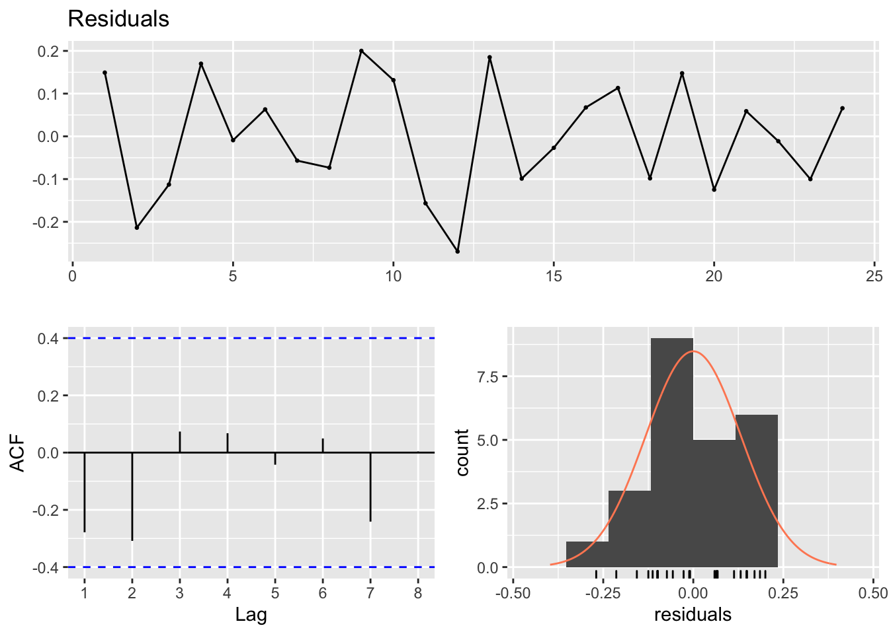

2.1 Fitting time-varying regressions
Fitting a time-varying regression is done with the lm() function. For example, here is how to fit a 4th-order polynomial for time to the anchovy data. We are fitting this model:
\[log(Anchovy) = \alpha + \beta t + \beta_2 t^2 + \beta_3 t^3 + \beta_4 t^4 + e_t\]
First load in the data. landings.RData includes a number of data objects. anchovy is a data frame with year and log.metric.tons columns. anchovy87 is the same data frame but with the years 1964 to 1987. These are the years that Stergio and Christou use for fitting their models. They hold out 1988 and 1989 for forecast evaluation.
load("landings.RData")We need to add on a column for \(t\) (and \(t^2\), \(t^3\), \(t^4\)) where the first year is \(t=1\). We could regress against year (so 1964 to 1987), but by convention, one regresses against 1 to the number of years or 0 to the number of years minus 1. Stergiou and Christou did the former.
anchovy87$t = anchovy87$Year-1963
anchovy87$t2 = anchovy87$t^2
anchovy87$t3 = anchovy87$t^3
anchovy87$t4 = anchovy87$t^4
model <- lm(log.metric.tons ~ t + t2 + t3 + t4, data=anchovy87)All our covariates are functions of \(t\), so we do not actually need to add on the \(t^2\), \(t^3\) and \(t^4\) to our data frame. We can use the I() function. This function is useful whenever you want to use a transformed value of a column of your data frame in your regression.
anchovy87$t = anchovy87$Year-1963
model <- lm(log.metric.tons ~ t + I(t^2) + I(t^3) + I(t^4), data=anchovy87)Let’s look at the fit.
summary(model)##
## Call:
## lm(formula = log.metric.tons ~ t + I(t^2) + I(t^3) + I(t^4),
## data = anchovy87)
##
## Residuals:
## Min 1Q Median 3Q Max
## -0.26951 -0.09922 -0.01018 0.11777 0.20006
##
## Coefficients:
## Estimate Std. Error t value Pr(>|t|)
## (Intercept) 8.300e+00 1.953e-01 42.498 <2e-16 ***
## t 1.751e-01 1.035e-01 1.692 0.107
## I(t^2) -2.182e-02 1.636e-02 -1.333 0.198
## I(t^3) 1.183e-03 9.739e-04 1.215 0.239
## I(t^4) -1.881e-05 1.934e-05 -0.972 0.343
## ---
## Signif. codes: 0 '***' 0.001 '**' 0.01 '*' 0.05 '.' 0.1 ' ' 1
##
## Residual standard error: 0.1458 on 19 degrees of freedom
## Multiple R-squared: 0.9143, Adjusted R-squared: 0.8962
## F-statistic: 50.65 on 4 and 19 DF, p-value: 7.096e-102.1.1 Orthogonal polynomials
None of the time effects are significant despite an obvious linear temporal trend to the data. What’s going on? Well \(t\), \(t^2\), \(t^3\) and \(t^4\) are all highly correlated. Fitting a linear regression with multiple highly correlated covariates will not get you anywhere unless perhaps all the covariates are needed to explain the data. We will see the latter case for the sardine. In the anchovy case, multiple of the covariates could explain the linear-ish trend.
You could try fitting the first degree model \(x_t = \alpha + \beta t + e_t\), then the second \(x_t = \alpha + \beta_1 t + \beta_2 t^2 + e_t\), then the third. This would reveal that in the first and second order fits, we get significant effects of time in our model. However the correct way to do this would be to use orthogonal polynomials.
2.1.1.1 poly() function
The poly() function creates orthogonal covariates for your polynomial. What does that mean? Let’s say you want to fit a model with a 2nd order polynomial of \(t\). It has \(t\) and \(t^2\), but using these as covariates directly lead to using two covariates that are highly correlated. Instead we want a covariate that explains \(t\) and another that explains the part of \(t^2\) that cannot be explained by \(t\). poly() creates these orthogonal covariates. The poly() function creates covariates with mean zero and identical variances. Covariates with different means and variances makes it hard to compare the estimated effect sizes.
T1 = 1:24; T2=T1^2
c(mean(T1),mean(T2),cov(T1, T2))## [1] 12.5000 204.1667 1250.0000T1 = poly(T1,2)[,1]; T2=poly(T1,2)[,2]
c(mean(T1),mean(T2),cov(T1, T2))## [1] 4.921826e-18 2.674139e-17 -4.949619e-20Using poly() to fit the anchovy data
We saw in the anchovy fit that using \(t\), \(t^2\), \(t^3\) and \(t^4\) directly in the fit resulted in no significant estimated time effect despite a clear temporal trend in the data. If we fit with poly() so that we do not use correlated time covariates, we see a different picture.
model <- lm(log.metric.tons ~ poly(t,4), data=anchovy87)
summary(model)##
## Call:
## lm(formula = log.metric.tons ~ poly(t, 4), data = anchovy87)
##
## Residuals:
## Min 1Q Median 3Q Max
## -0.26951 -0.09922 -0.01018 0.11777 0.20006
##
## Coefficients:
## Estimate Std. Error t value Pr(>|t|)
## (Intercept) 9.08880 0.02976 305.373 < 2e-16 ***
## poly(t, 4)1 1.97330 0.14581 13.534 3.31e-11 ***
## poly(t, 4)2 0.54728 0.14581 3.753 0.00135 **
## poly(t, 4)3 0.30678 0.14581 2.104 0.04892 *
## poly(t, 4)4 -0.14180 0.14581 -0.972 0.34302
## ---
## Signif. codes: 0 '***' 0.001 '**' 0.01 '*' 0.05 '.' 0.1 ' ' 1
##
## Residual standard error: 0.1458 on 19 degrees of freedom
## Multiple R-squared: 0.9143, Adjusted R-squared: 0.8962
## F-statistic: 50.65 on 4 and 19 DF, p-value: 7.096e-102.1.2 Residual diagnostics
We want to test if our residuals are temporally independent. We can do this with the Ljung-Box test as Stergio and Christou do. For the Ljung-Box test
- Null hypothesis is that the data are independent
- Alternate hypothesis is that the data are serially correlated
Example of the Ljung-Box test
Box.test(rnorm(100), type="Ljung-Box")##
## Box-Ljung test
##
## data: rnorm(100)
## X-squared = 0.0043044, df = 1, p-value = 0.9477The null hypothesis is not rejected. These are not serially correlated.
Stergio and Christou appear to use a lag of 14 for the test (this is a bit large for 24 data points). The degrees of freedom is lag minus the number of estimated parameters in the model. So for the Anchovy data, \(df = 14 - 2\).
x <- resid(model)
Box.test(x, lag = 14, type = "Ljung-Box", fitdf=2)##
## Box-Ljung test
##
## data: x
## X-squared = 14.627, df = 12, p-value = 0.2625Compare to the values in the far right column in Table 4. The null hypothesis of independence is rejected.
Breusch-Godfrey test
Although Stergiou and Christou use the Ljung-Box test, the Breusch-Godfrey test is more standard for regression residuals. The forecast package has the checkresiduals() function which will run this test and some diagnostic plots.
forecast::checkresiduals(model)
##
## Breusch-Godfrey test for serial correlation of order up to 8
##
## data: Residuals
## LM test = 12.858, df = 8, p-value = 0.11682.1.3 Compare to Stergiou and Christou
Stergiou and Christou (1996) fit time-varying regressions to the 1964-1987 data and show the results in Table 4.
Table 4
Compare anchovy fit to Stergiou and Christou
Stergiou and Christou use a first order polynomial, linear relationship with time, for the anchovy data. They do not state how they choose this over a 2nd order polynomial which also appears supported (see fit with poly() fit to the anchovy data).
anchovy87$t = anchovy87$Year-1963
model <- lm(log.metric.tons ~ t, data=anchovy87)The coefficients and adjusted R2 are similar to that shown in their Table 4. The coefficients are not identical so there may be some differences in the data I extracted from the Greek statistical reports and those used in Stergiou and Christou.
c(coef(model), summary(model)$adj.r.squared)## (Intercept) t
## 8.36143085 0.05818942 0.81856644Compare sardine fit to Stergiou and Christou
For the sardine (bottom row in Table 4), Stergio and Christou fit a 4th order polynomial. With poly(), a 4th order time-varying regression model is fit to the sardine data as:
sardine87$t = sardine87$Year-1963
model <- lm(log.metric.tons ~ poly(t,4), data=sardine87)This indicates support for the 2nd, 3rd, and 4th orders but not the 1st (linear) part.
summary(model)##
## Call:
## lm(formula = log.metric.tons ~ poly(t, 4), data = sardine87)
##
## Residuals:
## Min 1Q Median 3Q Max
## -0.115300 -0.053090 -0.008895 0.041783 0.165885
##
## Coefficients:
## Estimate Std. Error t value Pr(>|t|)
## (Intercept) 9.31524 0.01717 542.470 < 2e-16 ***
## poly(t, 4)1 0.08314 0.08412 0.988 0.335453
## poly(t, 4)2 -0.18809 0.08412 -2.236 0.037559 *
## poly(t, 4)3 -0.35504 0.08412 -4.220 0.000463 ***
## poly(t, 4)4 0.25674 0.08412 3.052 0.006562 **
## ---
## Signif. codes: 0 '***' 0.001 '**' 0.01 '*' 0.05 '.' 0.1 ' ' 1
##
## Residual standard error: 0.08412 on 19 degrees of freedom
## Multiple R-squared: 0.6353, Adjusted R-squared: 0.5586
## F-statistic: 8.275 on 4 and 19 DF, p-value: 0.0004846Stergiou and Christou appear to have used a raw polynomial model using \(t\), \(t^2\), \(t^3\) and \(t^4\) as the covariates instead of orthogonal polynomials. To fit the model that they did, we use
model <- lm(log.metric.tons ~ t + I(t^2) + I(t^3) + I(t^4), data=sardine87)Using a model fit with the raw time covariates, the coefficients and adjusted R2 are similar to that shown in Table 4.
c(coef(model), summary(model)$adj.r.squared)## (Intercept) t I(t^2) I(t^3) I(t^4)
## 9.672783e+00 -2.443273e-01 3.738773e-02 -1.983588e-03 3.405533e-05
##
## 5.585532e-01The test for autocorrelation of the residuals is
x <- resid(model)
Box.test(x, lag = 14, type = "Ljung-Box", fitdf=5)##
## Box-Ljung test
##
## data: x
## X-squared = 32.317, df = 9, p-value = 0.0001755fitdf specifies the number of parameters estimated by the model. In this case it is 5, intercept and 4 coefficients.
The p-value is less than 0.05 indicating that the residuals are temporally correlated.
2.1.4 Summary
Why use time-varying regression?
It looks there is a simple time relationship. If a high-order polynomial is required, that is a bad sign.
Easy and fast
Easy to explain
You are only forecasting a few years ahead
No assumptions required about ‘stationarity’
Why not to use time-varying regression?
Autocorrelation is not modeled. That autocorrelation may hold information for forecasting.
You are only using temporal trend for forecasting (mean level).
If you use a high-order polynomial, you might be modeling noise from a random walk. That means interpreting the temporal pattern as having information when in fact it has none.
Is time-varying regression used?
It seems pretty simple. Is this used? All the time. Most “trend” analyses are a variant of time-varying regression. If you fit a line to your data and report the trend or percent change, that’s a time-varying regression.